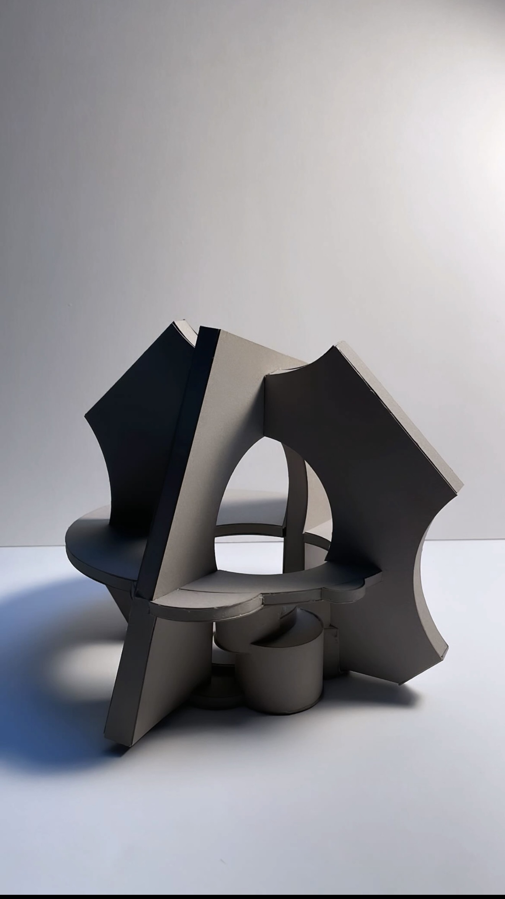

Education
University of New Mexico - School of Architecture + Planning
Bachelor of Arts in Architecture Design Studies
Graduated May 2026

Architecture Design Studies
Recent graduate from the University of New Mexico working across furniture design, industrial design, architecture, fabrication, and product design through a process grounded in material, making, and spatial thinking.
About
Recent graduate with a Bachelor of Arts in Architecture Design Studies from the University of New Mexico. Passionate about furniture design, industrial design, fabrication, hands-on making, and landscape architecture. Experienced in taking projects from concept development through digital modeling, prototyping, fabrication, and final production. Seeking opportunities to grow as a designer while contributing strong creative problem-solving, technical drafting, and fabrication skills.
University of New Mexico - School of Architecture + Planning
Bachelor of Arts in Architecture Design Studies
Graduated May 2026
Independent Furniture Designer & Maker
2025 - Present
Designed, prototyped, fabricated, and sold custom furniture and home decor pieces from sketching through digital modeling, material selection, fabrication, finishing, and delivery.
Green Summit Landscape Management | Trees of Corrales Plant Nursery
Student Intern | May 2024 - August 2024
Gained hands-on experience across landscape design, construction, maintenance, spray crew, and nursery operations.
Advanced Fabrication
Universe of Universal Design
Design Thinking
Sustainability
Plant Materials
Global Seal of Biliteracy
New Mexico Bilingualism-Biliteracy State Seal
APS Bilingual Honor Seal
Projects
Resume
Contact